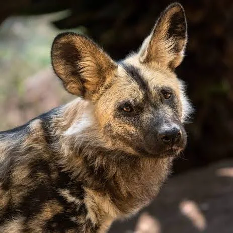

African Wild Dog
Endangered
Estimated remaining: ~6,600 individuals
Habitat
Savannas, woodlands, and open plains across sub-Saharan Africa.
Threats
- Habitat fragmentation
- Human-wildlife conflict
- Snaring and disease
Conservation efforts
Wildlife corridors, community engagement, GPS tracking, and anti-snare patrols. Conservationists also vaccinate domestic dogs to prevent disease transmission.